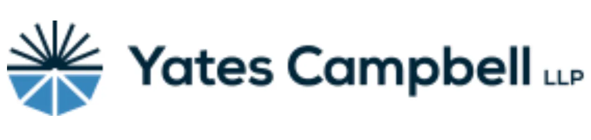
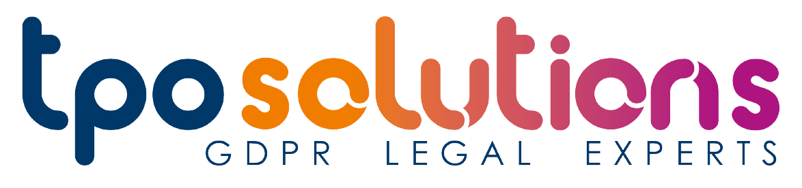
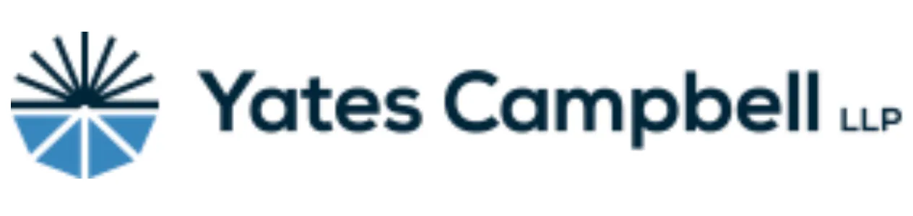
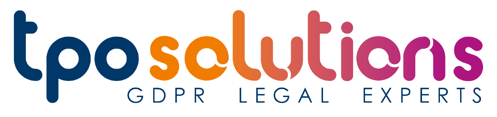

Über mich auf einen Blick

Hallo, ich heiße Ilona Sobczak
Vielen Dank für Ihr Interesse. Zunächst möchte ich mich kurz vorstellen: Ich verfüge über die doppelte Staatsbürgerschaft (US-amerikanisch / belgisch). Ich bin belgischer Herkunft, aber aus beruflichen Gründen bin ich 1993 in die Vereinigten Staaten ausgewandert. Da ich mehr als die Hälfte meines Lebens in den USA gelebt und gearbeitet habe, bin ich dreisprachig (Deutsch/Französisch/Englisch), was mein größter Vorteil als Übersetzer und Dolmetscher ist. Im Jahr 2002 erhielt ich durch meinen Arbeitgeber eine unbefristete Aufenthaltserlaubnis und 2009 die US-Staatsbürgerschaft auf eigene Initiative.
Ausbildung
- 19/11/2024: Erfolgreiches Bestehen der schriftlichen Prüfung, die vom „State Courts Administrator Office of Florida“ (Court Interpreter Certification and Regulation Program) durchgeführt wurde - Vom Zertifizierungs-ausschuss für Gerichtsdolmetscher (Court Interpreter Certification Board / CICB) mit Wirkung vom 17/12/2024 als registrierte Dolmetscherin für Deutsch anerkannt und im Verzeichnis der Gerichts-dolmetscher für das Florida State Courts System eingetragen
- 02/14/2023: Erfolgreiches Bestehen der „Florida Teacher Certification Examination“ in Französisch (K-12)
- 06/23/1997: Belgische Staatsprüfung: Übersetzer / Revisor – Ref.: 68022521886 / CFG97045
- 1991–1992: Pädagogische Zertifizierung / „Institut Saint Laurent“, Lüttich, Belgien
- 1987–1991: "Institut Libre Marie Haps / Université Catholique de Louvain-la-Neuve", Brüssel, Belgien : „Licencié-Traducteur" (als "Master's in Translation" in den USA anerkannt)
- Juli 1991: Stipendium: Germanische Sprachen, Humboldt Universität, Berlin, Deutschland
Berufserfahrung
- 2023: US-Regierungszulassung für IT Tier 3 / Level II (Zugang zu Verschlusssachen).
- 13/03/2023 – 05/31/2023: Langzeitvertretung als Französischlehrerin an der Community School of Naples
- Seit dem 1. August 2021: Selbstständig als freiberufliche Übersetzerin und Dolmetscherin (Deutsch/Französisch >< Englisch). Mitglied der American Translators Association (ATA).
- 03/03/1998 – 03/06/2021: ASG Technologies, Inc. (Naples, Florida, USA): Executive Assistant & Translator; Senior HR Translator - zuständig für personelle/juristische Übersetzungen (FR/DE >< EN).
- 1991 – 1998: Übersetzer und Editor bei J.P. Morgan Trust Company of NY, Europäisches Komitee für Normung (Comité Européen de Normalisation / CEN), Rechtsanwaltskanzlei “Cleary, Gottlieb, Steen & Hamilton“ (Brüssel, Belgien); Sprachlehrer an der Hochschule für Wirtschaftswissenschaften „Institut Sainte Marie“ in Lüttich, Belgien.
Services
Als dreisprachige Übersetzerin (Deutsch/Französisch >< Englisch & Deutsch >< Französisch) mit über 30 Jahren Erfahrung bin ich insbesondere im Bereich juristischer Übersetzungen tätig. Darüber hinaus biete ich Dolmetscherdienste, insbesondere konsekutives Dolmetschen bei eidesstattlichen Aussagen, sowie Privatunterricht an. Meine Arbeit zeichnet sich durch Exzellenz, Engagement und unübertroffene Präzision, Detailtreue und zeitnahe Reaktionsfähigkeit aus.
„Wenn Du mit einem Menschen in einer Sprache sprichst, die er versteht, geht das in seinen Kopf. Wenn Du mit ihm in seiner eigenen Sprache sprichst, berührt es sein Herz.“ – Nelson Mandela
Zu meinen Kunden gehören

 





Kontaktinformationen
Tel.: +1 239 249 9862
E-Mail: ilonarsobczak@gmail.com